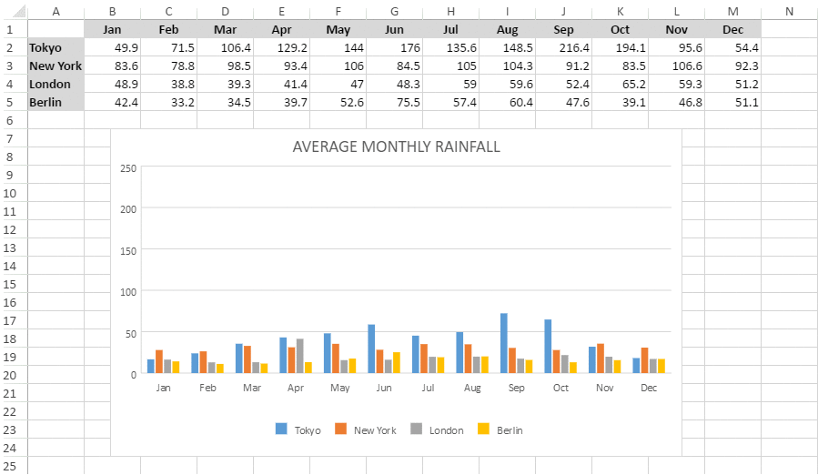
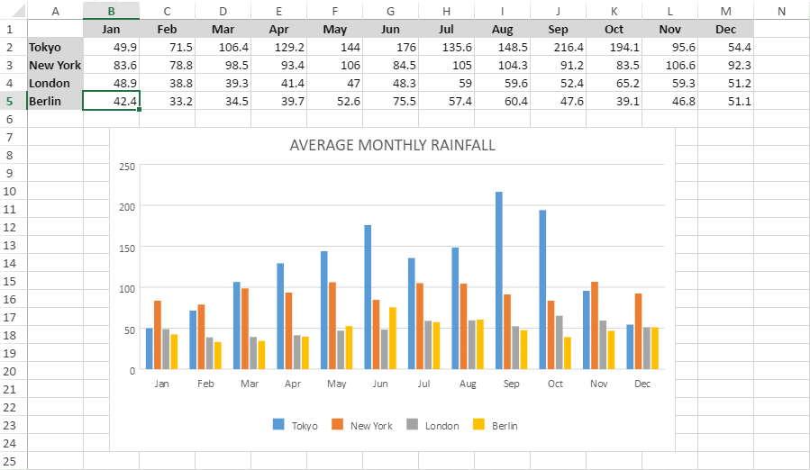

SpreadJS provides support for using animation in the charts in order to enable users to interact dynamically with the data and enhance visualization while working with spreadsheets. Besides this, using animation in charts facilitates users to quickly identify, analyse and manipulate trends from the information plotted in the rows and columns of a worksheet.
For instance, let's take the example of a scenario wherein you have data for monthly rainfall for several geographical regions and you need to compare which country witnessed the highest and the lowest rainfall in a particular month. When such type of data is plotted in the spreadsheet and the chart is created, it will become easier to read and manipulate information rather than going through a large number of rows and columns for information analysis. Further, if an animation is also added to the chart, it becomes even more convenient to visualize data in real-time and take informed decisions quickly and efficiently.
You can add an existing animation in a worksheet based on your requirements as shown in the image shared below.
You can also update the animation in the worksheet by dynamically changing the data to identify trends in real-time as shown in the image shared below.

The following example code shows how to use animation in charts.
| JavaScript |
Copy Code
|
|---|---|
var spread = new GC.Spread.Sheets.Workbook(document.getElementById("ss")); sheet = spread.getActiveSheet(); sheet.suspendPaint(); var dataArray = [ ["", 'Jan', 'Feb', 'Mar', 'Apr', 'May', 'Jun', 'Jul', 'Aug', 'Sep', 'Oct', 'Nov', 'Dec'], ["Tokyo", 49.9, 71.5, 106.4, 129.2, 144.0, 176.0, 135.6, 148.5, 216.4, 194.1, 95.6, 54.4], ["New York", 83.6, 78.8, 98.5, 93.4, 106.0, 84.5, 105.0, 104.3, 91.2, 83.5, 106.6, 92.3], ["London", 48.9, 38.8, 39.3, 41.4, 47.0, 48.3, 59.0, 59.6, 52.4, 65.2, 59.3, 51.2], ["Berlin", 42.4, 33.2, 34.5, 39.7, 52.6, 75.5, 57.4, 60.4, 47.6, 39.1, 46.8, 51.1] ]; sheet.setArray(0, 0, dataArray); // Add a column chart of type - columnClustered chart_columnClustered = sheet.charts.add('chart_columnClustered', GC.Spread.Sheets.Charts.ChartType.columnClustered, 300, 180, 600, 400, "A1:M5"); // Use Animation in charts chart_columnClustered.useAnimation(true); // Configure Chart Title var title = chart_columnClustered.title() title.fontSize = "24.00"; title.color = "rgb(228,65,54)"; title.text = 'AVERAGE MONTHLY RAINFALL'; chart_columnClustered.title(title); sheet.resumePaint(); |
|